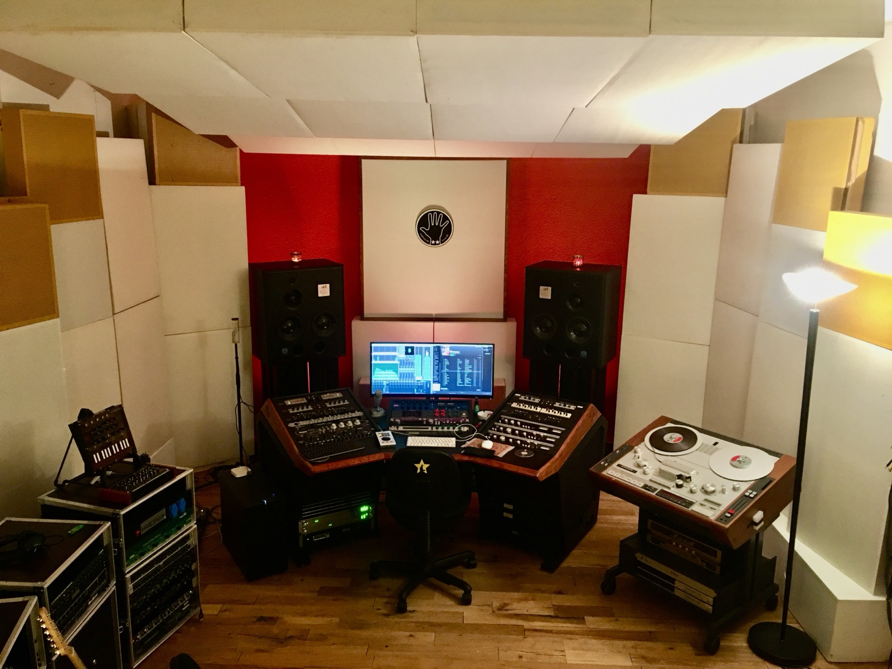
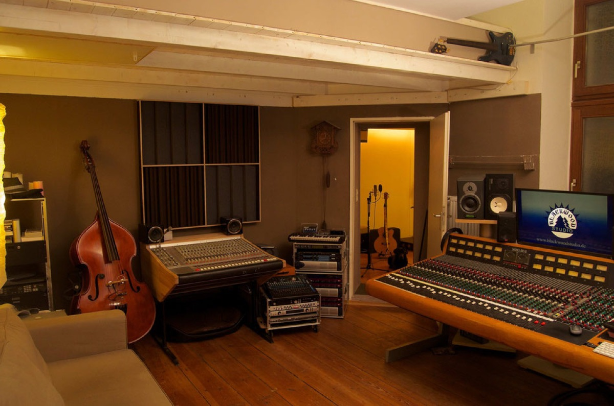
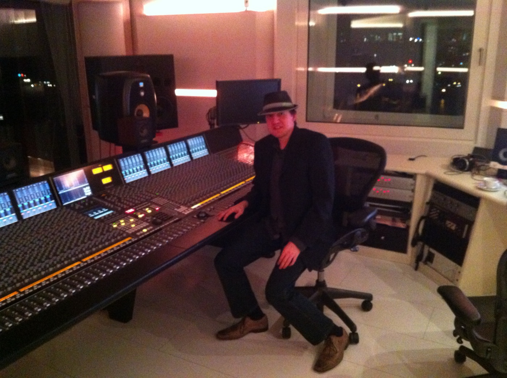
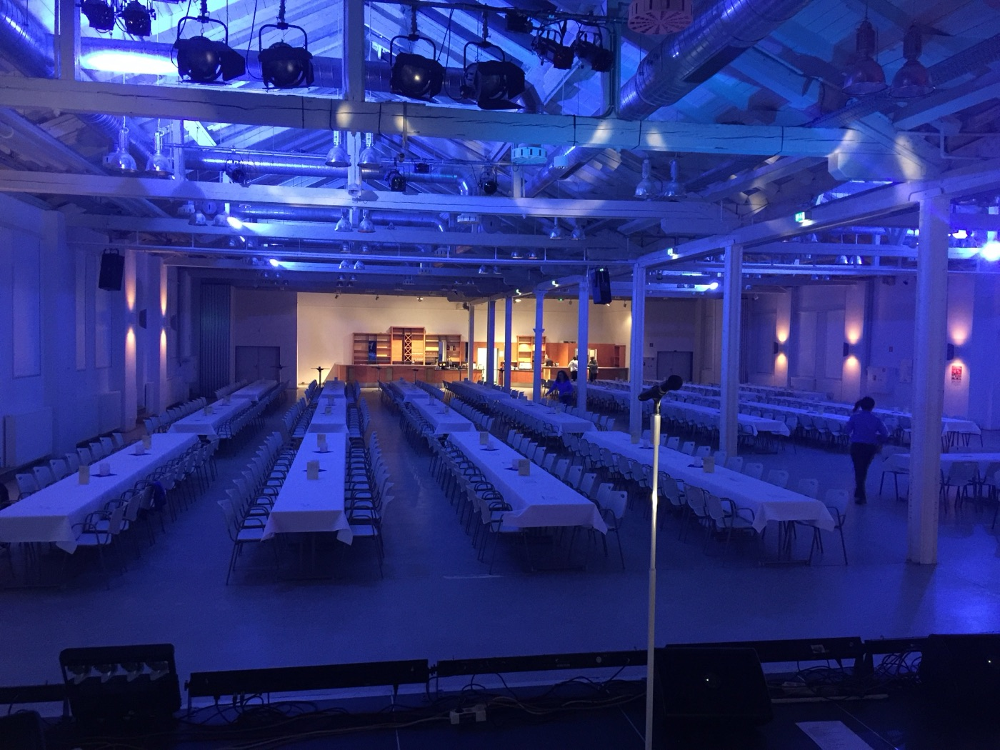

Studio- & Akustikdesign
Räume, die gut klingen
Als unabhängiger Studio- und PA-Designer berate ich Sie als kompetenter Partner in Sachen Verkabelung, Akustik und technische Ausstattung – Soft- und Hardware.
Wofür ich plane
- Komplette Tonstudios – Akustik und Ausstattung
- Wohnräume – Schallschutz und Raumakustik
- Proberäume
- Sprach-, Gesangs- und Übekabinen
- Heimkinos
- Konferenztechnik
- Veranstaltungstechnik


So läuft es ab
Ich komme gerne zu Ihnen, messe und begutachte die akustischen Gegebenheiten vor Ort. Danach plane ich die Umsetzung nach Ihren Vorstellungen – und im Rahmen Ihres Budgets.
Ihre Räume lassen sich mit eigens entwickelten Akustikmodulen sehr kostengünstig und effektiv ausstatten.
Oder Sie bauen selbst
Wie baue ich was? Gerne zeige ich Ihnen vor Ort, wie Sie Ihre Räume günstig optimieren. Sehr gute Ergebnisse müssen nicht teuer sein.



Besuch im Referenzstudio
Hören Sie selbst
Besuchen Sie mich gerne in meinem Referenzstudio in Berlin-Kreuzberg. Ich freue mich auf Sie!
- info@blackwoodaudio.de
- Telefon
- 0176 / 47 11 86 41